Fixed-camera Blender reviews of production road meshes, baked textures, terrain samples and FBX placements. These are not Unity/HDRP screenshots. Click a view for its full-size PNG.
The before view uses the original Ground road-splat equations on the same prepared layout. It isolates the old road surface; the old random avenue placement is not reconstructed. After includes the replacement roadside instance plan. Woods and native crop shaders are omitted; terrain, lighting and LOD appearance are approximate. Cameras are the stated height above the ground target.
Report, integration patch and build checklist
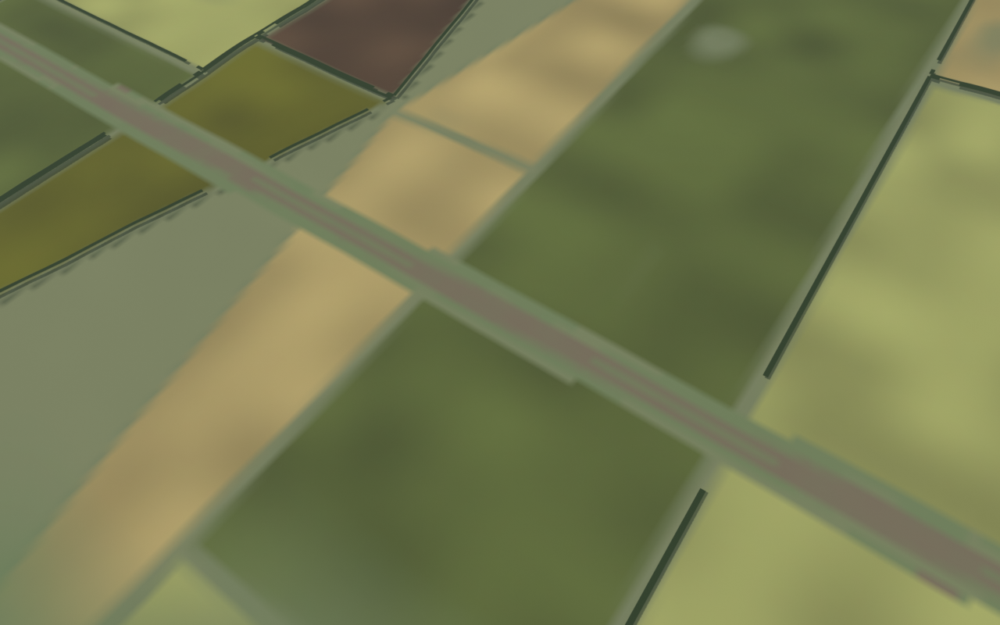
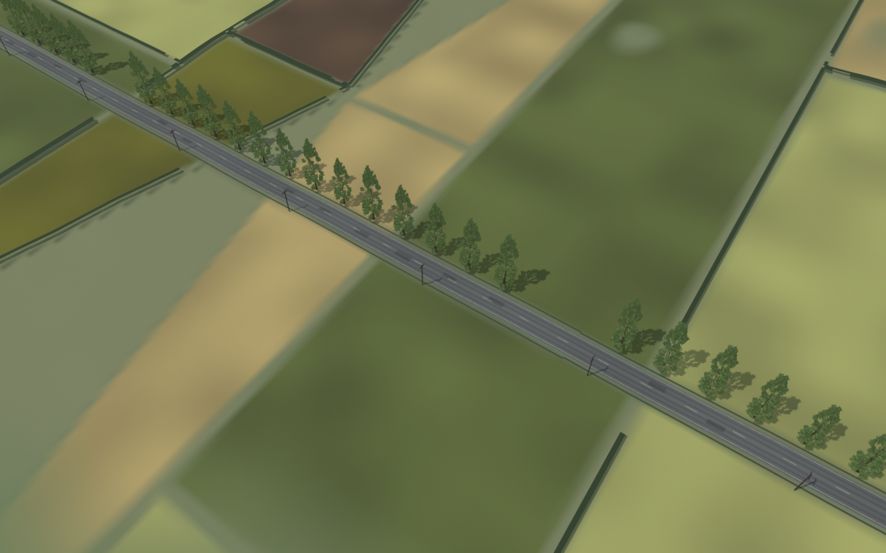
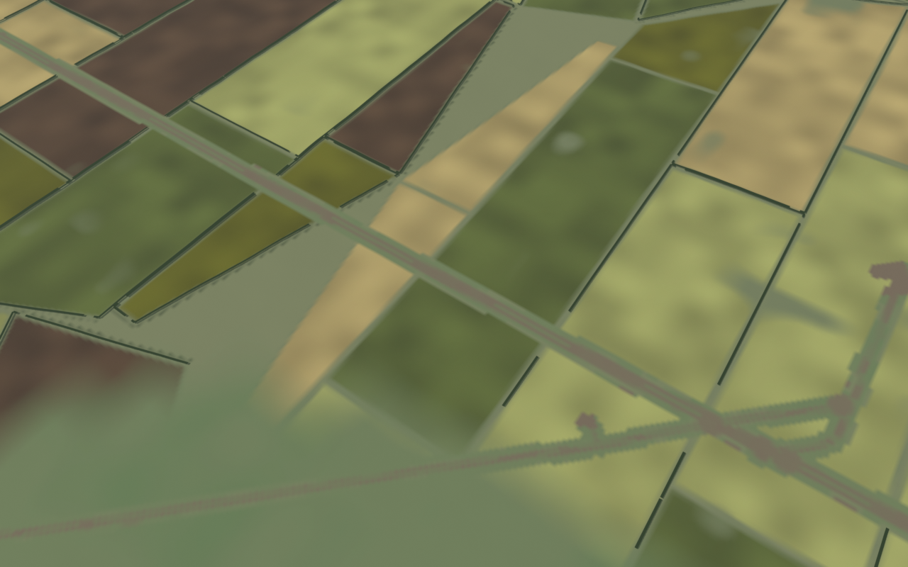
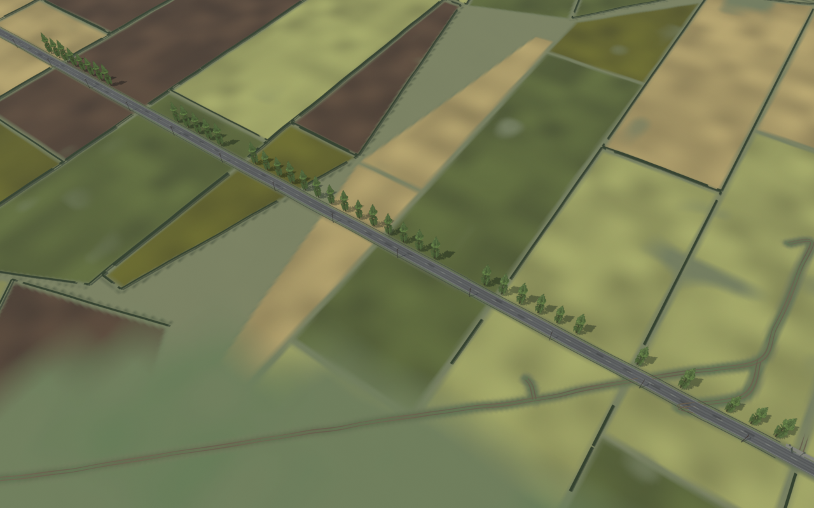
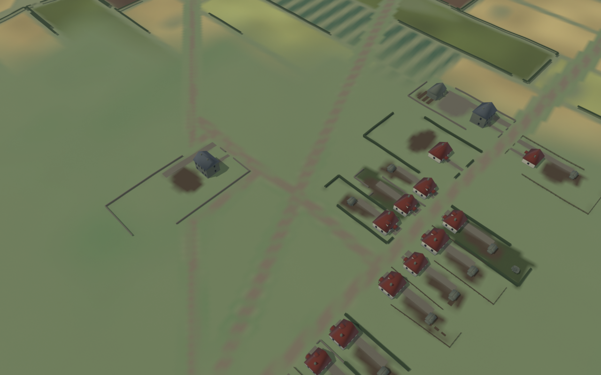
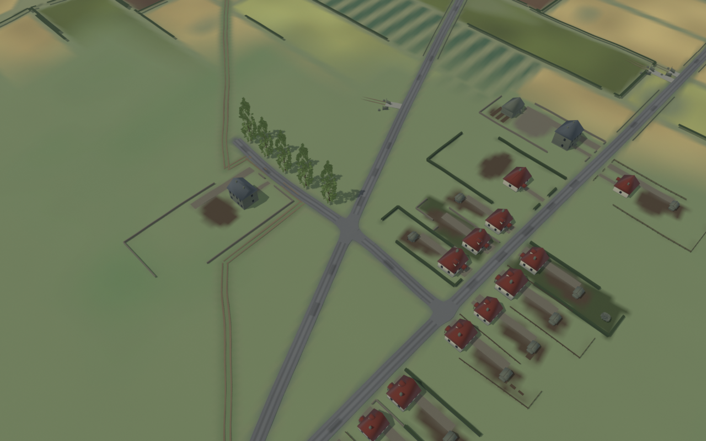
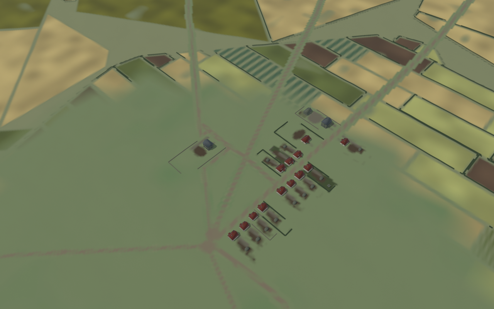
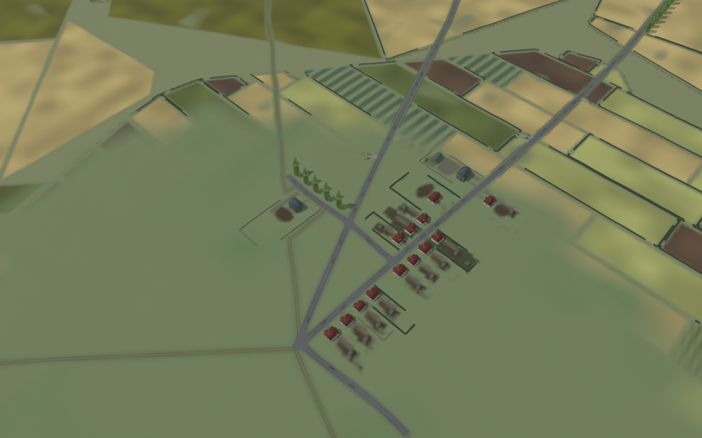
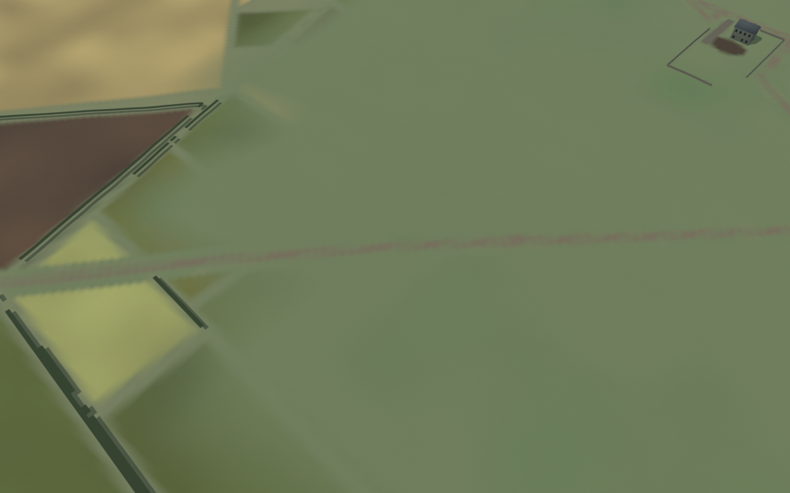
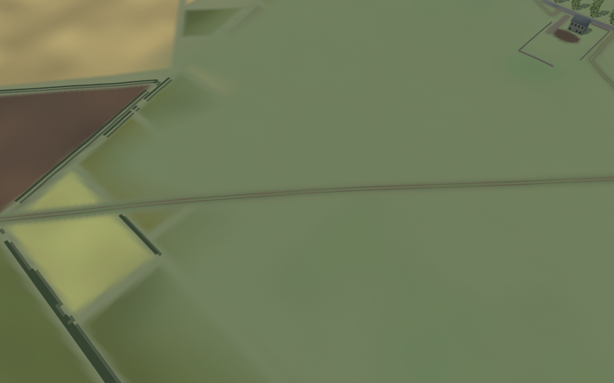
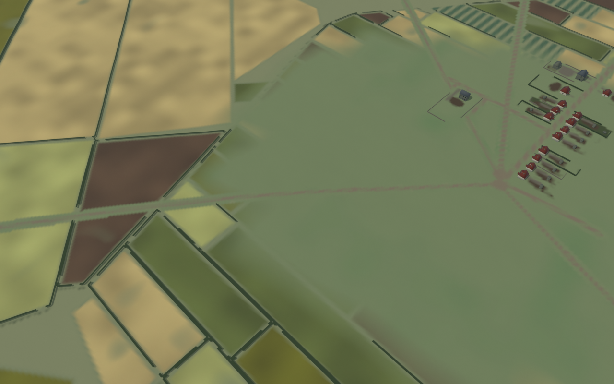
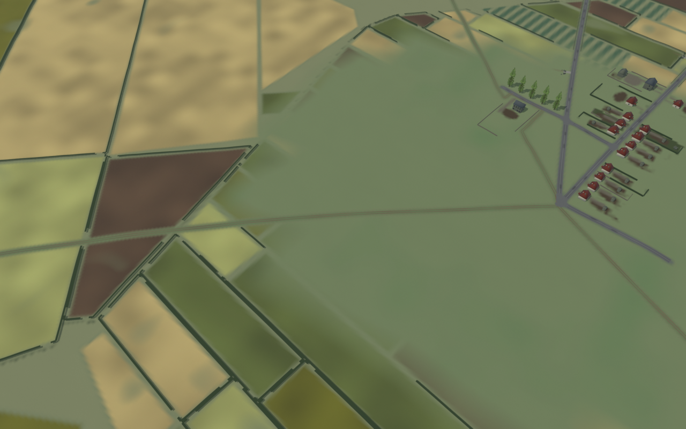
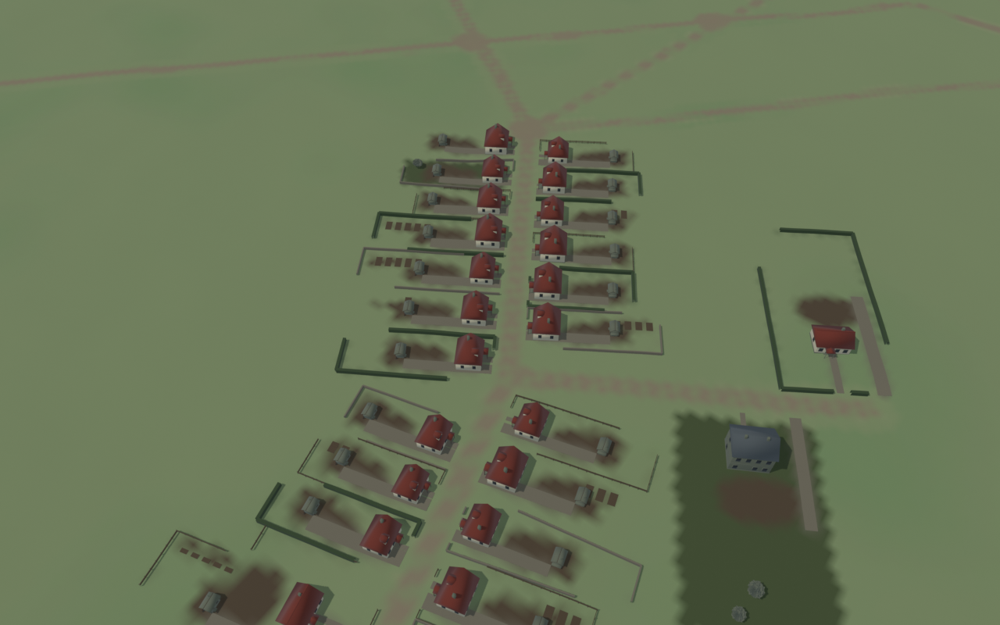
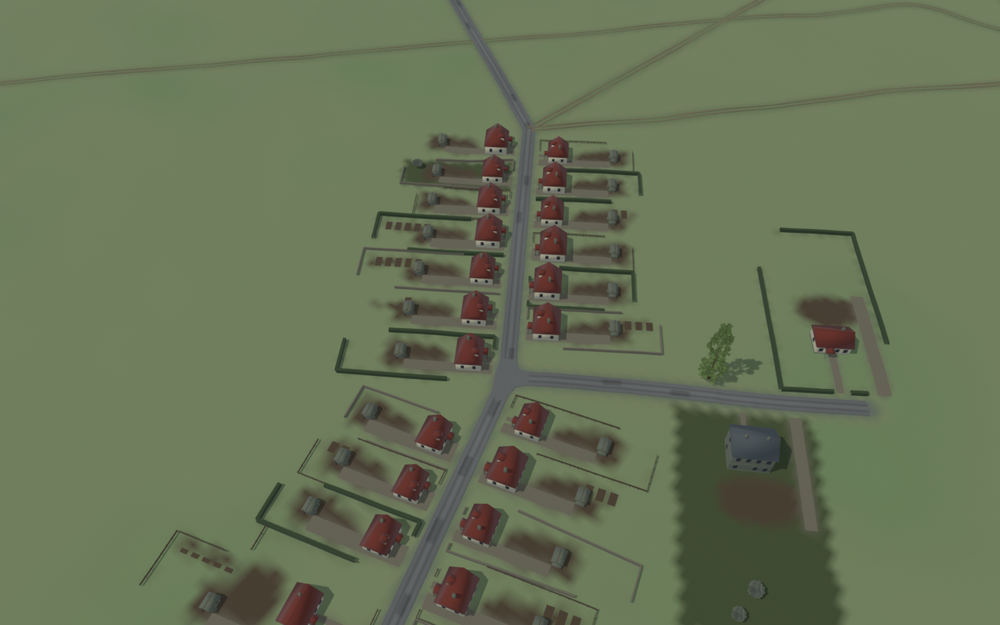
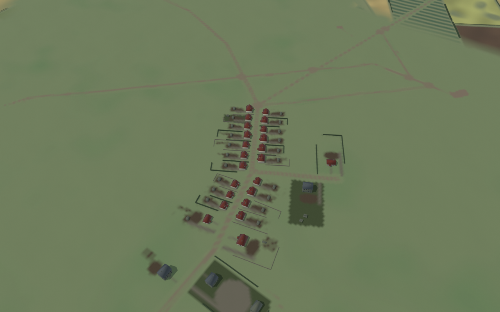
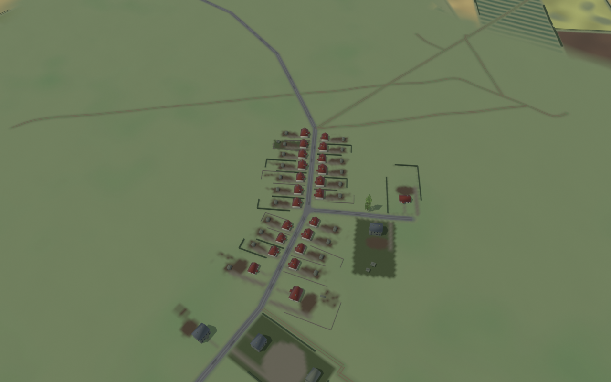